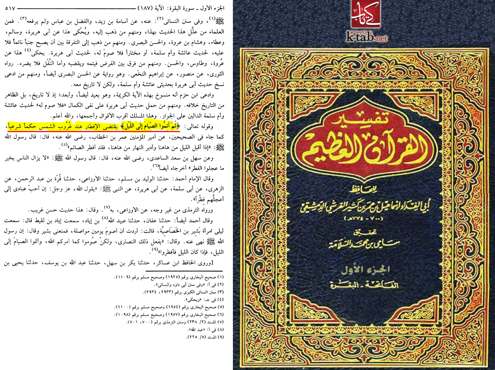
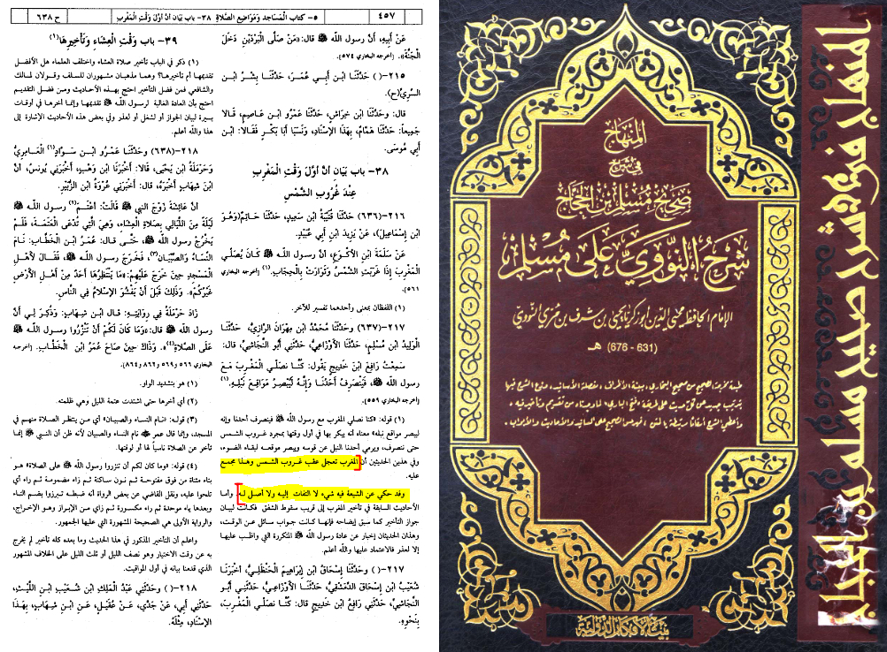
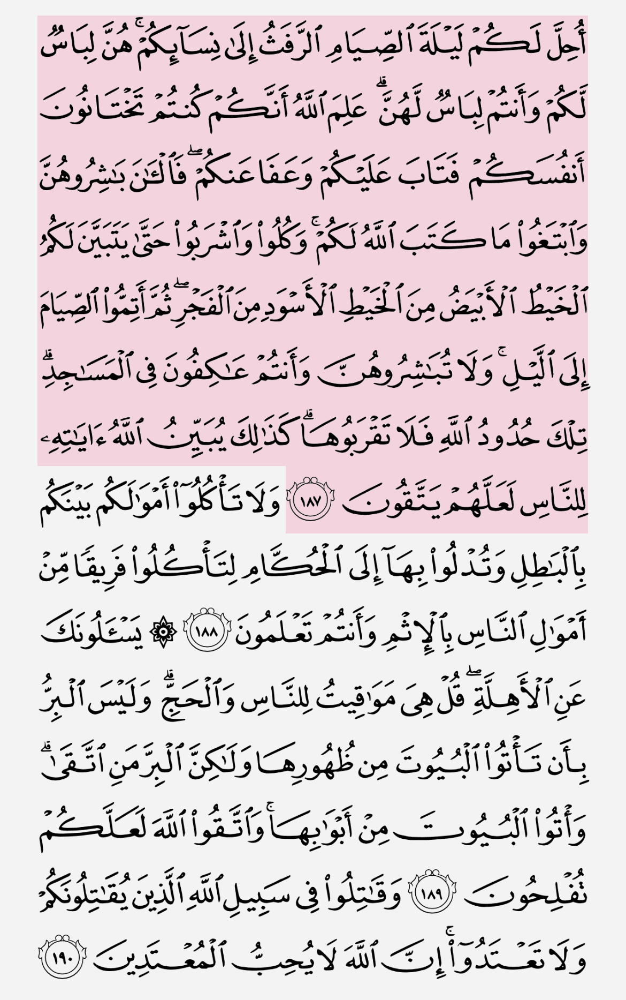

When is breaking ur sawm?

Sheikh Ibn Kather said in his tasfir of Al-Baqarah Ayah 187 “then complete your Sawm till the nightfall
”means that breaking the fast at the moment of sunset) >

Imam an-Nawawi said: Maghrib comes immediately after the sun has set,
so that means we break fast when the sun sets.>

ثُمَّ أَتِمُّوا الصِّيَامَ إِلَى اللَّيْلِ
complete your Sawm when the nightfall